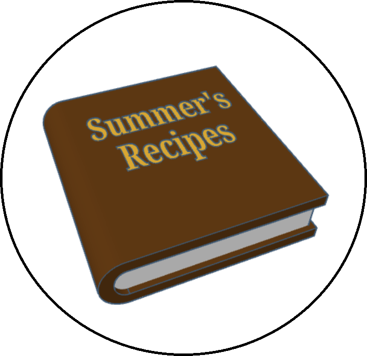

Overview
Purpose
The purpose of this site will be to host any kind of recipe on an easily accessible website. It will have a page for adding a recipe, an easy to peruse display of the recipes, and a search function.
Audience
The audience for this website will be targeted specifically for my wife who loves to cook.
Dynamic elements
The content for the initially displayed recipe Names and Images will be dynamically loaded and then the selected recipe will dynamically load its information from a product or recipe dictionary. A current idea for the dictionary is as follows:
[
{
name: `Recipe Name 1`,
imgSrc: `whatever/stored/image/link/address`,
sourceLink: `whatever/source/link/address`,
time: {
time1: {
title: `Generic time title`,
hour: 1,
minute: 30
},
time2: {
title: `Specific time title`,
hour: `-`,
minute: 30
}
},
ingredients: [
`$heading$heading 1`,
`$sub$ingredient 1`,
`$sub$ingredient 2`,
`$sub$ingredient 3`,
`$sub$ingredient 4`,
`$heading$heading 2`,
`$sub$ingredient 1`,
`$sub$ingredient 2`,
`$sub$ingredient 3`
],
instructions: [
`$heading$heading 1`,
`$sub$step 1`,
`$sub$step 2`,
`$sub$step 3`,
`$sub$step 4`,
`$heading$heading 2`,
`$sub$step 1`,
`$sub$step 2`,
`$sub$step 3`
],
notes: `-`,
}
];
Branding
Website Logo

Style Guide
Color Palette
Palette URL: https://coolors.co/423e37-e3b23c-edebd7-a39594-6e675f| Primary | Secondary | Accent 1 | Accent 2 |
|---|---|---|---|
| #423E37 | #E3B23C | #EDEBD7 | #6E675F |
Pseudocode for your project
Home Page:
-Images/Name boxes displayed by default by whatever order in the product dict aka by the date/time the recipe was uploaded/stored.
+boxes loaded dynamically from product dict by whatever filter and/or sorting method applied.
-Logo image on click > redirect to home page.
-Search bar > filters recipes on display.
-Randomize Order on click > Randomize the order in which recipes are displayed.
-Alphabetical Order on click > Display the order of the recipes alphabetically.
-Reverse Order on click > Reverse the current order of the displayed recipes.
-Add Recipe on click > Redirect to Add Recipe page.
-Product Image/Name box on click > display associated product's recipe along with all of it's given information attached to it.
+X button on click > close the opened display for that recipe.
+Recipe Name on click > Open link to Source Link.
+Information is loaded dynamically from product dict.
Add Recipe Page:
-Logo image on click > redirect to home page.
-Back button on click > redirect to home page.
-Name button on click > open/close option to input product's name.
+Click check to input name to product dict.
-Image button on click > open/close button to upload image.
+Click check to input image to product dict.
-Source Link button on click > open/close option to input the product's source link if the recipe is from a website.
+Click check to input link to product dict > iframe updates to display the source website as a reference for filling out the rest of the recipe form.
-Time button on click > open/close option to input time in three input areas: Hour, Minute, Title (Like "total time" or "prep time").
+Click plus to add another time (so you can display the total time and prep time, etc...).
+Click check to input time(s) to product dict.
-Servings button on click > open/close option to input servings amount with recipe.
+Click check to input serving amount to product dict.
-Calories button on click > open/close option to input calory amount with product.
+Click check to input calory amount to product dict.
-Ingredients button on click > open/close option to input either a heading or an ingredient.
+Click headings check to input provided text as a heading in the Ingredients in the product dict.
+Click ingredients check to input provided text as an ingredient in the Ingredients in the product dict.
-Instructions button on click > open/close option to input either a heading or an ingredient.
+Click headings check to input provided text as a heading in the Instructions in the product dict.
+Click instructions check to input provided text as a step in the Instructions in the product dict.
-Notes button on click > open/close option to input either a heading or a note.
+Click headings check to input provided text as a heading in the Notes in the product dict.
+Click instructions check to input provided text as a note in the Notes in the product dict.
-Confirm Recipe button on click > Officially upload addition to stored recipes.
+Entries with nothing given provide "-" by default in the product dict.
Wireframes
Create wireframes for your project page(s). One for each page and list them here.
Landing page
All additional information that is unclear in the wireframe is made clear in the pseudo code section.
Home Page Wireframe LinkAdd Recipe Page
All additional information that is unclear in the wireframe is made clear in the pseudo code section.
Add Recipe Page Wireframe Link